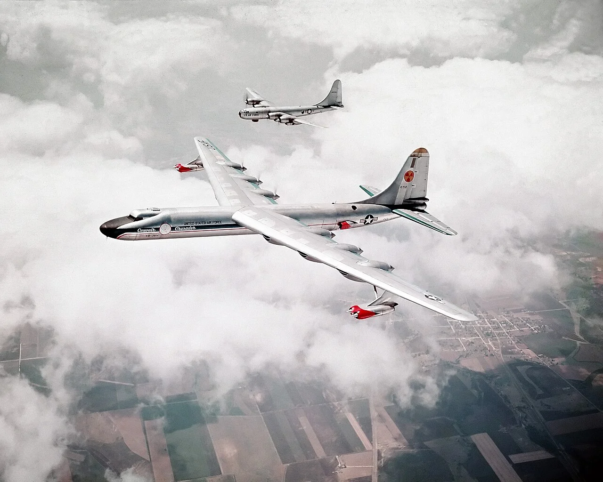
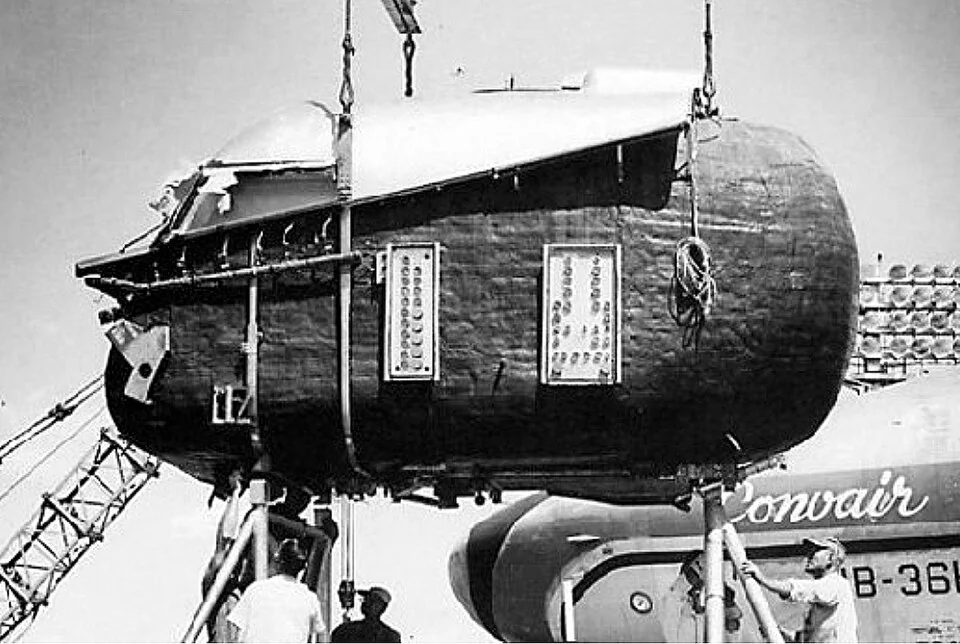
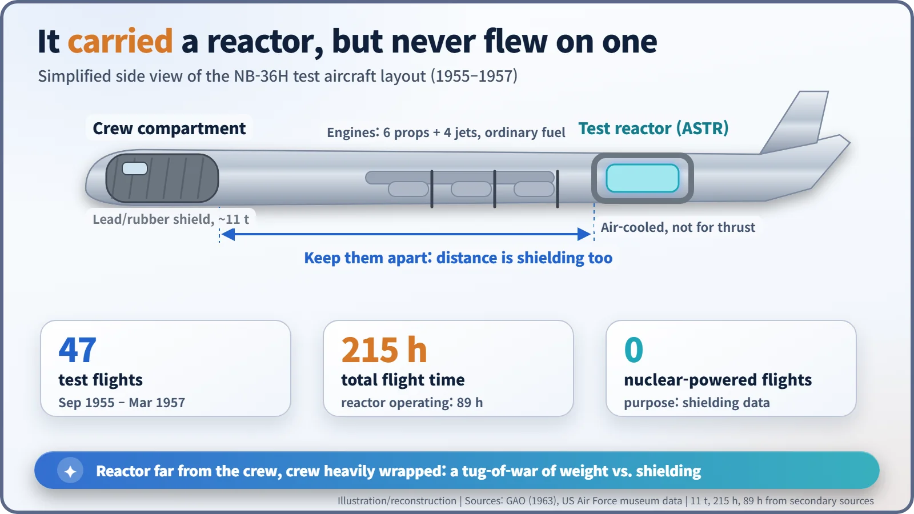
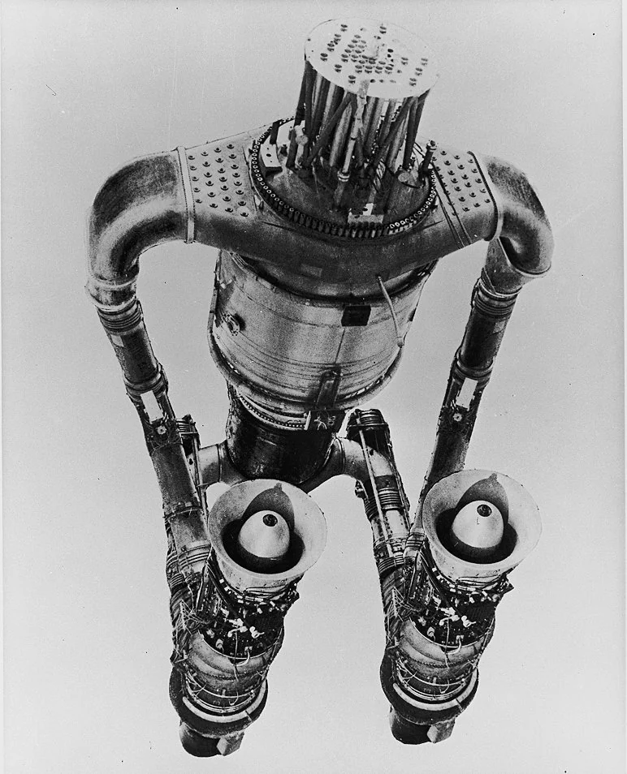
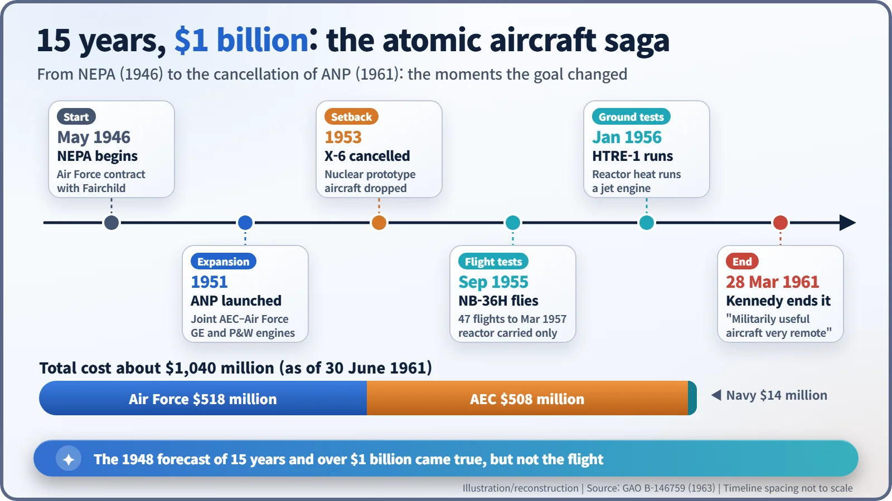

Nuclear History · 140
It Carried a Reactor but Never Flew on One — The Aircraft Nuclear Propulsion Program (NEPA and ANP, 1946–1961)
The NB-36H flew 47 times with a reactor on board and Idaho test rigs ran jet engines on fission heat, but no aircraft ever flew on nuclear power.
From 1946 to 1961 the United States spent about $1 billion trying to build a nuclear-powered aircraft. A converted B-36 bomber, the NB-36H, flew 47 times with a working reactor on board, and ground tests in Idaho ran jet engines on reactor heat. But no aircraft ever flew on nuclear power, and President Kennedy ended the program in March 1961.
A car that never stops for fuel
Imagine a car that never has to stop for fuel. In the early Cold War, the US Air Force dreamed of the aircraft version: a bomber that could stay aloft for days, perhaps weeks, with no tanker in sight. Swap the burning of kerosene for the heat of nuclear fission and, on paper at least, it seemed possible. The United States spent 15 years and about $1 billion chasing that dream. Spoiler: no aircraft ever flew on nuclear power. [1]
A dream that started nine months after the war
The story begins in May 1946, when the Army Air Forces (soon to become the independent US Air Force) gave the Fairchild Engine and Airplane Corporation a contract for NEPA, Nuclear Energy for the Propulsion of Aircraft. NEPA had two jobs: work out whether nuclear flight was feasible, and teach an aircraft-engine industry that knew nothing about reactors how nuclear energy worked. [1] [2]
In the summer of 1948 the Atomic Energy Commission (AEC) asked a group of scientists gathered at MIT, the "Lexington Project", for an independent view. Their answer was cautious. Success could not be guaranteed, they said, but "there is a strong possibility that some version of nuclear flight can be achieved" with enough people and money, and an intensive effort would be needed to fly within 15 years. The cost, they warned, would run well over $1 billion. Keep those two numbers in mind. [2]
In 1951 NEPA closed, having concluded that nuclear flight was feasible in principle, and was replaced by the joint AEC–Air Force Aircraft Nuclear Propulsion (ANP) program. General Electric took on a "direct cycle" engine, in which air passes straight through the reactor core and into a jet engine; Pratt & Whitney studied an "indirect cycle" that carried heat out of the reactor in liquid metal.
A reactor instead of fuel: so what was the problem?
A jet engine sucks in air, heats it by burning fuel and blasts it out of the back. Put a reactor core where the combustion chamber was, and fission heat can do the same job.
The real enemy was weight. Gamma rays and neutrons are stopped by thick, heavy materials such as lead and water, and wrapping enough of them around a reactor to protect a crew makes an aircraft very hard to lift. To produce useful thrust, the air had to leave the core extremely hot, so fuel and cladding had to survive brutal temperatures. And there was always the uncomfortable question: what happens to the reactor if the plane crashes?
A bomber with a lead box: the NB-36H
So the Air Force started with the easier step: flying with a reactor on board rather than flying on one. Convair rebuilt a B-36 bomber that had been damaged by a tornado in September 1952 and called it the NB-36H.

An air-cooled test reactor sat in the rear bomb bay. Up front, the crew rode in a new nose compartment lined with lead and rubber that weighed roughly 11 tons. The idea was simple: keep the reactor and the people as far apart as possible, and wrap the people heavily, because distance itself is excellent shielding. [3]

The aircraft first flew with its reactor critical in September 1955 and completed its 47th and final test flight in March 1957. According to secondary sources it logged about 215 hours in the air, with the reactor running for 89 of them. Here is the common myth: the NB-36H flew with a reactor, not on one. Its six propellers and four jet engines burned ordinary fuel. The reactor was a flying experiment, measuring how radiation spread in the air and how well the shielding held up. [1] [3]

Nuclear jet engines in the desert
Nuclear propulsion did actually happen, but on the ground. At the National Reactor Testing Station in Idaho, GE's Heat Transfer Reactor Experiment No. 1 (HTRE-1) ran a modified J47 jet engine on reactor heat alone in January 1956. The engine was started on chemical fuel; as the reactor power rose, the fuel was throttled back until fission was doing all the work. Its successor, HTRE-3, drove two jet engines at once and even started an engine on nuclear power alone. It also had a setback: in November 1958 a faulty power reading led to control rods being withdrawn too far, and part of the fuel melted. [2]

A target that kept moving
What shook the program most was not the physics but its direction. In 1953 the Air Force cancelled the X-6 nuclear prototype aircraft. In 1955 it adopted a nuclear strategic bomber as the new goal, then dropped it again. A 1963 review by the US General Accounting Office (GAO) noted that "frequent changes in emphasis and direction of the program occurred". Meanwhile the age of ballistic missiles had arrived, and a bomber that could loiter for days looked less essential. [1]
On 28 March 1961 President John F. Kennedy wrote, in a special message to Congress on the defence budget:
"Nearly 15 years and about $1 billion have been devoted to the attempted development of a nuclear-powered aircraft; but the possibility of achieving a militarily useful aircraft in the foreseeable future is still very remote."
He added that reaching even a first experimental flight would need at least another $1 billion. General Electric's own post-mortem saw it differently: in its view the program ended mainly because there was no specific military requirement for a slow, long-endurance aircraft of that kind. [1] [2]

What 15 years and $1 billion left behind
The GAO put the total cost at about $1,040 million as of 30 June 1961, with the Air Force ($518 million) and the AEC ($508 million) each paying roughly half and the Navy about $14 million. Its verdict was plain: no aircraft had ever flown on nuclear power, and no prototype had even been built. The 1948 forecast of "15 years, well over $1 billion" turned out to be right about the time and the money, just not about the flight. The Soviet Union also flew a test reactor, in a modified Tu-95 known as the Tu-95LAL, and it too never used the reactor for propulsion. [1]
The work was not wasted. The AEC said its high-temperature materials and shielding research fed into later space reactor programs. Between "technically possible" and "actually useful" lay a long runway made of weight, safety and cost. Today HTRE-2 and HTRE-3 stand side by side in the car park of the EBR-I museum at Idaho National Laboratory, monuments to that runway. [4]